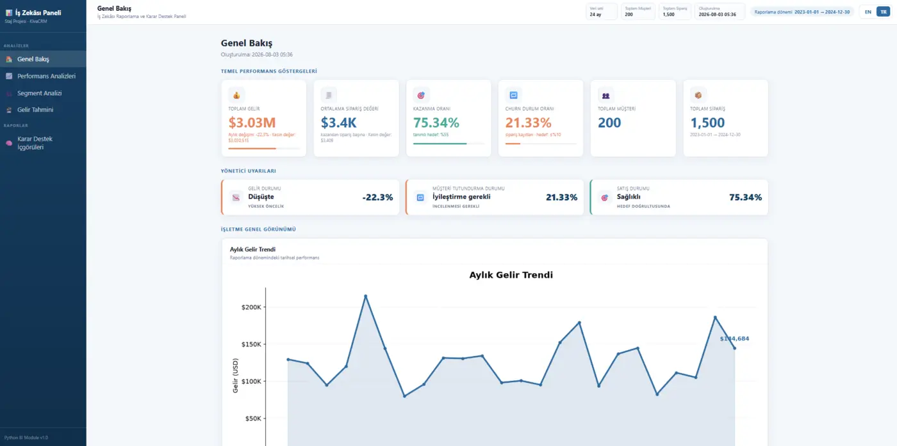
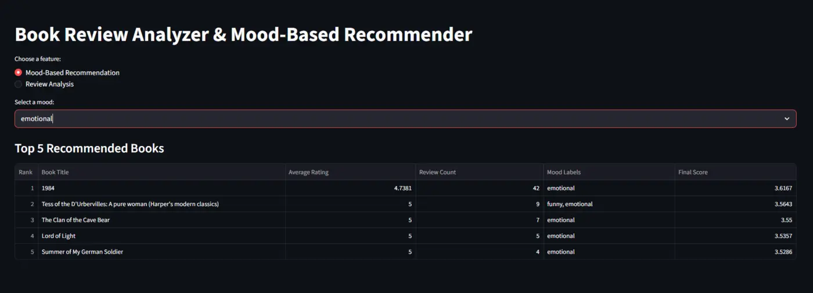

Computer engineering · Data · AI
Hi, I'm Salsabeel. I make complex things feel clear.
My interests sit where data and software meet. I enjoy finding patterns, building practical systems, and shaping technical ideas into experiences people can understand and use.
Profile / 2026
Computer Engineering
Karadeniz Technical University
20K
reviews analyzed
97.9%
gesture accuracy
Python
Data
Python✦SQL✦Applied AI✦
Business Intelligence✦Machine Learning✦
Software Engineering
01 / About
A curious engineer with a soft spot for useful details.
I graduated with a B.Sc. in Computer Engineering from Karadeniz Technical University. Most of what I build begins with a question: how can this data, model, or idea become genuinely useful?
That question has taken me through business intelligence, natural language processing, recommendation systems, deep learning, and signal processing. I like working end to end—from preparing data to evaluating results and creating the interface around them.
I'm also naturally drawn to multilingual environments. Moving between Arabic, English, and Turkish has shaped how I communicate: clearly, carefully, and with context.
02 / Selected work
Projects that taught me the most.
Each one combines technical work with a clear outcome: a decision, recommendation, or recognition system someone can actually use.

01 · Business intelligence
Bilingual BI & Decision Support System
A modular Python system for synthetic CRM data, built during my KivaCRM internship. It validates data, tracks KPIs, segments customers, forecasts revenue, and generates recommendations in English and Turkish.
Interactive dashboard
Automated reports
Forecasting
Python · Pandas · Plotly · OpenPyXL · Streamlit
View repository ↗
02 · Natural language processing
Book Review Analyzer & Recommender
A sentiment classifier trained on 20,000 reviews, paired with a mood-based recommendation system and an interactive Streamlit app.
0.76accuracy
0.78weighted F1
Scikit-learn · TF-IDF · NLP · Streamlit
Accuracy97.9%
03 · Deep learning
Hand Gesture Recognition
A hybrid CNN–RNN model that learns spatial and sequential patterns from sEMG signals to classify hand gestures.
TensorFlow · Keras · CNN–RNN · sEMG
View repository ↗03 / Toolkit
The tools behind the work.
Data
Python · SQL · MySQL · Pandas · NumPy · Plotly
Machine learning
Scikit-learn · TensorFlow · Keras · NLP · Model evaluation
Building
Streamlit · APIs · Git · Linux · Modular Python · Documentation
04 / Journey
Experience & education.
Business Intelligence & Decision Support
Built a bilingual reporting system across data validation, analysis, segmentation, forecasting, recommendations, dashboards, and exports.
Computer Engineering
Coursework and projects spanning software development, databases, machine learning, deep learning, signal processing, and computer systems.
05 / Online
Find the rest of my work online.
GitHub is where I keep the code and documentation. LinkedIn is where I share the broader story.